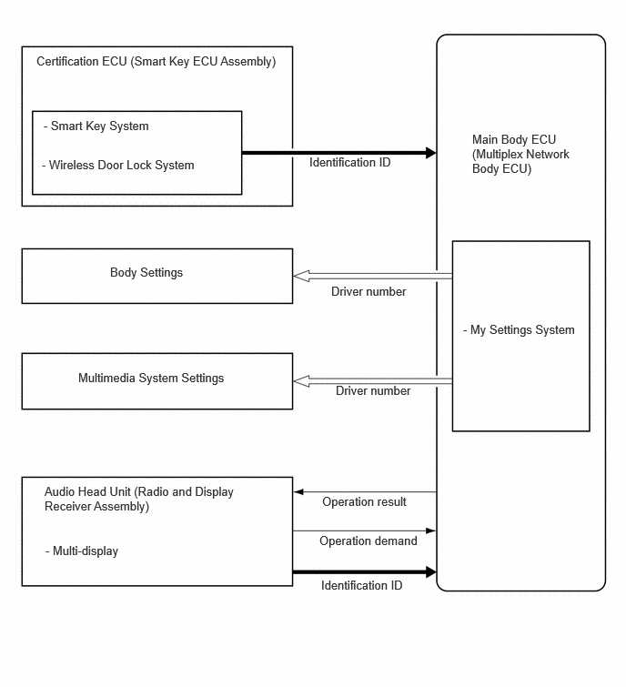

- Identifies the driver based on the identification ID sent by the certification ECU and audio head unit.
- Sends the identified driver number to each system of the vehicle.
| Last Modified: 10-07-2025 | 6.11:8.1.0 | Doc ID: NM100000002M6CB |
| Model Year Start: 2024 | Model: Tacoma | Prod Date Range: [12/2023 - ] |
| Title: MY SETTINGS: MY SETTINGS SYSTEM: MY SETTINGS CONTROL; 2024 - 2026 MY Tacoma Tacoma HV [12/2023 - ] | ||
MY SETTINGS CONTROL
FUNCTION OF MAIN COMPONENTS
|
Component |
Function |
|---|---|
|
Main Body ECU (Multiplex Network Body ECU) |
|
|
Certification ECU (Smart Key ECU Assembly) |
Performs a verification of the electrical key and sends an identification ID based on the verification result to the main body ECU. |
|
Audio Head Unit (Radio and Display Receiver Assembly) |
|
FUNCTION
(a) Performs a bulk recall of the vehicle settings based on the identified driver using the identification ID received from the driver identification device*.
HINT:
*: A certification device to specify the driver such as an electrical key.
(b) When recalling the vehicle settings, the nickname of the identified driver is displayed on the multi-display.
(c) Guest mode starts if the driver is not registered or the driver identification is not possible.
(d) Up to 3 drivers can be registered as official drivers.
(e) The settings can be changed using the customization function. Refer to the repair manual for details.
HINT:
- When the vehicle is delivered, there are no registered drivers for the driver identification device.
- The vehicle enters guest mode if the driver is not registered.
- The result of the driver identification is cleared when the doors are locked from outside the vehicle using entry lock or wireless door lock, and the driver mode automatically transfers to guest mode.
- If the driver status has been changed manually, the operation result will be maintained until the driver door is opened and closed with the ignition switch off or the doors are locked from outside the vehicle using entry lock or wireless door lock, and the driver mode automatically transfers to guest mode.
- The system starts from the state set by the previous driver when switching to guest mode.
- Any changes of the settings made in guest mode do not influence the settings status of the registered drivers.
SYSTEM CONTROL
(a) My Settings System Control
(1) In order to identify the driver, it is necessary for the identification ID acquired from the driver identification device to be assigned and registered.* Furthermore, it is possible to have multiple identification IDs for each driver.
HINT:
*: Refer to the repair manual for details about assignment and registration.
(2) Each in-vehicle device recalls stored settings in accordance with the received driver number.
(b) Driver Identification Devices
- By using a certification device to identify the driver such as an electrical key or Bluetooth device, etc.,
- The main body ECU obtains the key ID of an electrical key which will be used as an identification ID to specify the driver.
(1) Electrical Key
- The driver is identified based on the key ID of
the electrical key.
HINT:
- 1 electrical key can be registered per driver.
- An electrical key cannot be assigned and registered to the guest driver.
- A single person can be assigned and registered to a single electrical key.
- There are various timings to identify the driver.
The priority is shown in the below table.
Priority
Details
1
Electrical key first detected when opening the driver door
2
Electrical key detected at exterior verification area of driver door
3
Electrical key detected at interior preliminary verification area
4
Electrical key used to open a door
NOTICE:
When the detection conditions of the electrical key are not met, the driver may not be correctly identified.
HINT:
Items are displayed in order of priority (1 is the highest priority).
(2) Bluetooth Device
- If a Bluetooth device used with a hands-free cellular phone is connected via BLE (Bluetooth Low Energy), the driver is specified by the User ID in smartphone application.
- If a Bluetooth device is not compatible with
Bluetooth Low Energy (BLE), driver identification
will be performed only if the driver's Bluetooth
device used when the vehicle was last driven is
detected by the vehicle.
HINT:
It is recommended to assign a separate driver identification device such as an electrical key, in addition to the Bluetooth device. If only the Bluetooth device is assigned, a user change approval operation will need to be performed on the multi-display.
(3) Manual Changes
- If an incorrect driver is selected or a change of driver is necessary, etc., it is possible to manually change to a driver who has been registered using the multi-display.
- When performing a manual selection, manual changes have priority over the identified driver.
(c) Priority of driver identification device
(1) If multiple driver identification devices are detected, the result of the device which has a higher priority will be used.
|
Priority |
Details |
|---|---|
|
1 |
Manual changes |
|
2 |
Electrical Key |
|
3 |
Bluetooth device |
HINT:
Items are displayed in order of priority (1 is the highest priority).
(d) Reflection of driver identification results
(1) Driver identification results are applied or not applied based on the situation, as automatically applying vehicle settings immediately could seem abnormal to the driver.
|
Situation |
Description |
|---|---|
|
Prior to beginning to enter vehicle when parked |
Driver identification results are applied immediately to the vehicle settings. |
|
Ignition switch turned to ON but prior to driving |
If the driver identification results are updated, they are not immediately applied to the vehicle settings. Instead, the multi-information display indicates that a new driver was detected, and then the results are applied immediately to the vehicle settings once the driver gives approval. |
|
Driving |
Driver identification results are not updated. |
(e) Vehicle settings which can be registered
(1) It is possible to register the following vehicle settings:
|
Category |
System/Function |
|
|---|---|---|
|
Vehicle settings which can be set using multi-display |
Door control |
|
|
Lights |
||
|
Illumination |
||
|
Entering/exiting support settings |
||
|
Suggestion function |
||
|
Vehicle settings which can be set using multi-display |
Display system |
Multimedia |
HINT:
Some vehicle settings cannot be registered even if it is listed as a system or function which can be registered.